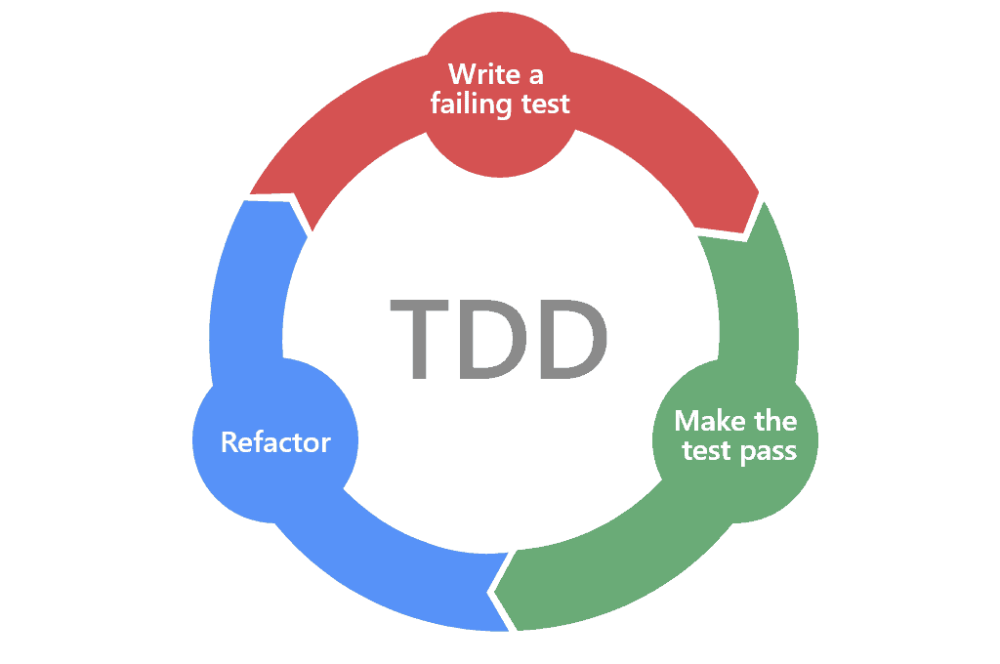

Test-driven development (TDD)
Kirjeldus
TDD tähendab, et testid kirjutatakse enne koodi. Eesmärk on tagada funktsionaalsuse õigsus juba arenduse alguses.
Arendustsükli joonis

Plussid ja miinused
- Pluss: tagab kõrge katvuse
- Miinus: nõuab distsipliini ja aega
Töövahend
JUnit – Java jaoks populaarne TDD raamistik.
Viited